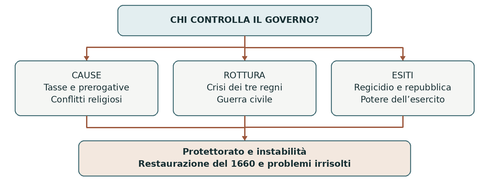

DAGLI STUART ALLA RESTAURAZIONE 1603–1660
La prima rivoluzione inglese
Il conflitto fra Carlo I e il Parlamento sfociò nella guerra civile, nell’esecuzione del re e nell’esperienza repubblicana. La vittoria contro la monarchia non produsse un sistema politico stabile: l’esercito acquistò un ruolo decisivo e Cromwell instaurò il Protettorato. Nel 1660 gli Stuart tornarono sul trono, ma i problemi aperti dalla rivoluzione non erano risolti.
0. Domanda generatrice
Chi ha il diritto di governare, imporre tasse e decidere la religione del paese quando re e Parlamento non riconoscono più gli stessi limiti del potere?
In sintesi La guerra nacque da più conflitti sovrapposti. Il punto di partenza è una monarchia che governava regni diversi e doveva trattare con le loro istituzioni.
1. Il mondo precedente
Nel 1603 Giacomo VI di Scozia divenne anche re d’Inghilterra con il nome di Giacomo I. Inghilterra e
Scozia ebbero lo stesso sovrano, ma conservarono istituzioni distinte; l’unione statale sarebbe arrivata nel
1707. Il re regnava anche sull’Irlanda. Le differenze religiose e politiche dei tre regni rendevano complesso
il governo.
Il Parlamento inglese comprendeva Camera dei Lords e Camera dei Comuni. Interveniva nella
legislazione e nell’approvazione di imposte straordinarie. Gli Stuart sostenevano un’autorità monarchica di
origine divina, mentre molti parlamentari difendevano consuetudini e prerogative. Nella Chiesa inglese i
puritani chiedevano una riforma più radicale. La contrapposizione non si spiega con una semplice
preferenza di Giacomo I per gli scozzesi.
In sintesi Tasse, religione e limiti dell’autorità erano questioni collegate. Con Carlo I le divergenze divennero una crisi del governo.
2. Le fratture
Salito al trono nel 1625, Carlo I entrò in conflitto con il Parlamento sul finanziamento delle guerre e
sull’uso dei poteri regi. Nel 1628 accettò la Petition of Right, che contestava imposizioni senza consenso
parlamentare e arresti arbitrari. Dal 1629 al 1640 governò senza convocare il Parlamento, cercando altre
entrate e suscitando nuove opposizioni.
Il tentativo di imporre agli scozzesi forme di culto vicine a quelle della Chiesa inglese provocò una
ribellione. La necessità di denaro per la guerra costrinse il re a convocare il Parlamento nel 1640. Dopo una
prima assemblea rapidamente sciolta, il Lungo Parlamento contestò ministri e strumenti del governo
personale. Anche la rivolta irlandese del 1641 accrebbe i timori: chi avrebbe controllato l’esercito
necessario a reprimerla?
In sintesi Il bisogno di risorse riportò il Parlamento al centro della politica, ma rese evidente la sfiducia verso il re. La disputa sul comando militare portò alla rottura.
3. Attori, gruppi e conflitti
I due campi comprendevano gruppi sociali diversi: proprietari terrieri, nobili e uomini delle città erano presenti in entrambi. Le appartenenze dipendevano anche da territorio, religione, fedeltà personali e paura dei disordini.
| Attori | Obiettivi e interessi |
|---|---|
| Realisti | Difendere il re, l’ordine monarchico e, spesso, la Chiesa episcopale. |
| Parlamentari | Limitare il governo personale, tutelare prerogative e promuovere riforme diverse fra loro. |
| Cromwell e ufficiali | Vincere la guerra e costruire un ordine protestante, conservando disciplina e stabilità. |
| Levellers | Ampliare la rappresentanza maschile e le garanzie religiose e giuridiche, con limiti non uniformi. |
| Popolazioni dei tre regni | Affrontare imposte, reclutamenti, occupazioni e violenze; partecipare anche a resistenze locali. |
In sintesi La coalizione parlamentare era unita contro il governo del re, ma divisa sul futuro. Queste differenze emersero con la vittoria militare.
4. Il processo storico
La guerra civile e la vittoria parlamentare
Nel 1642 iniziò la guerra civile. Il Parlamento disponeva di Londra, di risorse finanziarie importanti e di appoggi in diverse regioni; il re poteva contare su altri territori e fedeltà aristocratiche. Nessun campo coincideva interamente con una classe sociale.
Nel 1645 il New Model Army, comandato da Thomas Fairfax e sostenuto dall’azione di Cromwell, diede
alle forze parlamentari una struttura più coordinata. La vittoria di Naseby fu decisiva. Carlo I fu sconfitto,
ma cercò nuovi accordi e nel 1648 si combatté una seconda guerra civile. L’esercito radicalizzò la propria
posizione verso il sovrano.
Il regicidio e la repubblica
Nel dicembre 1648 l’esercito estromise dal Parlamento i deputati favorevoli a un compromesso,
nell’epurazione guidata dal colonnello Pride. Il Parlamento residuo, detto Rump, promosse il processo del
re. Carlo I fu giustiziato il 30 gennaio 1649; monarchia e Camera dei Lords furono abolite e venne
proclamato il Commonwealth.
La rottura non era stata l’obiettivo iniziale di tutti i parlamentari, né Cromwell aveva sempre voluto abolire la monarchia. Nel nuovo regime l’esercito ebbe un peso crescente e represse le aspirazioni più radicali. Le campagne in Irlanda e Scozia imposero il controllo inglese; in Irlanda massacri e confische lasciarono conseguenze durature.
Il Protettorato e il ritorno degli Stuart
L’Atto di navigazione del 1651 favorì il trasporto marittimo inglese: le merci europee dovevano arrivare
su navi inglesi o del paese produttore; per quelle di Asia, Africa e America erano previste restrizioni a
favore delle navi inglesi e coloniali. Non proibiva quindi ogni commercio alle navi straniere. Colpiva
soprattutto l’intermediazione olandese e contribuì alla rivalità marittima.
Nel 1653 Cromwell divenne Lord Protettore. Il regime combinava una costituzione scritta, istituzioni
rappresentative e forte controllo militare, senza risolvere il conflitto fra governo ed assemblee. Alla morte
di Cromwell nel 1658 il figlio Richard non riuscì a consolidare il potere. Il generale George Monck favorì
il ritorno di Carlo II nel 1660: la Restaurazione monarchica chiuse l’esperimento repubblicano.
In sintesi La vittoria sul re aprì un conflitto all’interno del campo vincitore. Il problema dell’autorità non scomparve con l’abolizione della monarchia.
Lo snodo decisivo
1648–1649: l’esercito selezionò il Parlamento che giudicò il re. Il gesto abbatté l’autorità monarchica, ma mostrò quanto il nuovo ordine dipendesse dalla forza militare.
5. Le fonti in dialogo
La Petition of Right del 1628
Fonte: petizione presentata dal Parlamento a Carlo I nel 1628 e accettata dal re. I parlamentari si rivolgevano al sovrano invocando diritti e consuetudini che consideravano già esistenti.
Contenuto — sintesi didattica: Il governo non deve imporre prestiti e tasse senza il consenso parlamentare né incarcerare arbitrariamente i sudditi. Vengono contestati anche l’alloggiamento forzato dei soldati e l’uso improprio della legge marziale.
Interpretazione e limiti: Il testo vuole limitare alcuni atti della monarchia, non abolirla. Documenta le richieste parlamentari, ma non dimostra che fossero applicate stabilmente: il successivo governo personale di Carlo I riaprì il conflitto.
Domanda di lettura: Perché è scorretto leggere la petizione come un programma repubblicano già compiuto?
Fonte — UK Parliament, The Petition of Right
In sintesi Le richieste del 1628 erano diverse dall’esito del 1649. La sequenza dimostra che gli obiettivi cambiarono durante la crisi.
6. Conseguenze e nuovo assetto
L’esecuzione del re mise radicalmente in discussione l’inviolabilità del sovrano. Si ampliarono discussioni su rappresentanza, libertà religiosa e diritti, senza tradursi in democrazia universale. L’esperienza repubblicana rivelò anche il rischio di subordinare le assemblee al potere militare.
La Restaurazione ripristinò monarchia e Lords, ma non cancellò il ruolo politico del Parlamento né la memoria della guerra. I contrasti sulla successione e sulla religione si sarebbero riaperti, preparando la seconda rivoluzione.
In sintesi Il 1660 chiuse una fase, senza annullarne gli effetti. Il rapporto fra corona e Parlamento restava da definire.
7. Conclusione
Nessuno riuscì a imporre una soluzione durevole soltanto vincendo la guerra. Il problema richiedeva regole accettate su tasse, leggi e comando delle forze armate: proprio ciò che il conflitto aveva distrutto.
Sintesi finale Gli Stuart si scontrarono con prerogative e autonomie esistenti. La crisi scozzese riportò il Parlamento al centro del governo. La guerra civile si concluse con la sconfitta e il processo del re. Repubblica e Protettorato dipendevano fortemente dall’esercito. Nel 1660 tornò la monarchia, ma il conflitto istituzionale restò aperto.
Per studiare e collegare
Coordinate essenziali
Spazio: Inghilterra, Scozia e Irlanda; concorrenza marittima con le Province Unite. Tempo: antefatto dal
1603; crisi rivoluzionaria 1640–1660, con guerra civile dal 1642.
Saperi irrinunciabili
1. Dal 1603 Inghilterra e Scozia avevano lo stesso re ma istituzioni separate.
2. Il Parlamento inglese era composto da Lords e Comuni.
3. La Petition of Right del 1628 contestava tassazione e arresti arbitrari.
4. Carlo I governò senza Parlamento dal 1629 al 1640.
5. La crisi scozzese e quella irlandese aggravarono il conflitto.
6. Il New Model Army contribuì alla vittoria parlamentare.
7. Carlo I fu giustiziato nel 1649 e venne abolita la monarchia.
8. Il campo parlamentare comprendeva progetti politici diversi.
9. Cromwell divenne Lord Protettore nel 1653.
10. La Restaurazione di Carlo II avvenne nel 1660.
Mappa concettuale

La linea della crisi non conduce automaticamente alla repubblica. Le decisioni del re, del Parlamento e dell’esercito modificano più volte le alternative.
Strumenti e attività
Linea del tempo ragionata
| Quando | Che cosa cambia |
|---|---|
| 1628–1629 | Petition of Right e avvio del governo personale. |
| 1640 | Convocazione dei Parlamenti e fine del governo senza assemblea. |
| 1642–1645 | Guerra civile e vittoria parlamentare a Naseby. |
| 1648–1649 | Epurazione del Parlamento, processo e morte del re. |
| 1651–1653 | Atto di navigazione e nascita del Protettorato. |
| 1658–1660 | Morte di Cromwell, crisi e Restaurazione. |
Vocabolario essenziale
Prerogativa regia. Potere riconosciuto al sovrano in virtù della sua carica.
Puritani. Protestanti che volevano riformare più profondamente la Chiesa inglese.
Regicidio. Uccisione di un re; nel 1649 avvenne dopo un processo politico.
Commonwealth. Nome del regime repubblicano instaurato nel 1649.
Protettorato. Regime guidato da un Lord Protettore dal 1653.
Attività di comprensione
1. Collega crisi finanziaria, conflitto religioso e convocazione del Parlamento nel 1640.
2. Spiega perché “proprietari terrieri contro mercanti” non descrive correttamente i due schieramenti.
3. Confronta Petition of Right e regicidio: quali richieste iniziali si trasformarono? Quale nuovo problema pose il ruolo dell’esercito?
Fonti e approfondimenti
Lezione di riferimento: «moderna.ppt», diapositiva 10. I collegamenti seguenti permettono di leggere la fonte e approfondire i passaggi centrali.
UK Parliament — Carlo I e la Petition of Right
Testo dell’Atto di navigazione del 1651 — Wikisource